福岡県を海沿いに西へ西へと進む。
目指すは佐賀県との県境だ。
あと数十メートルで佐賀県、という地点に色合いも大きさもカタチも
激地味〜〜な鳥居がポツンとある。
何の案内も説明もない鳥居だがここが今回の目的地なのだ。ここに素晴らしい奉納物があると聞きつけてやってきたのである。
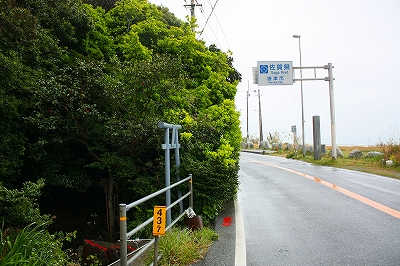 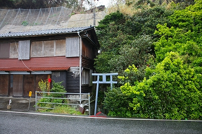
鳥居を潜ってみると谷底のような場所に下りていく石段が。
恐る恐る下りてみる。
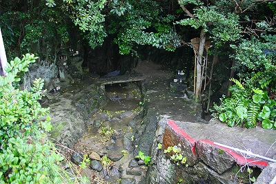
海辺のカラッとした光景からネガポジ逆転。おりからの雨もあいまって
暗くじっとりねっとりしたウェットな世界が展開されている。
↓全体としてはこんな感じ
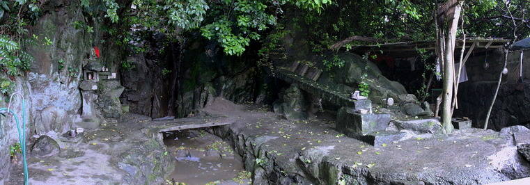
谷間の中央には水が流れており、その先には小さな滝がある。
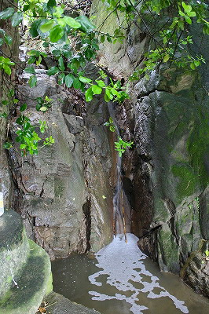
滝といっても実に慎ましやかなサイズの滝である。
水質や水勢はご覧の通り。
しかも滝の上流の方から電車の音が聞こえてくる。地図で確認してみると頭上に筑肥線が走っているようだ。
まあ、風情としてはあまり上等とは言いがたいが、海と国道と線路に挟まれた秘密基地のような、
エアポケットのような場所といえよう。
滝といえば不動明王、弘法大師の最強コンボ。勿論ここにもおわしますとも。
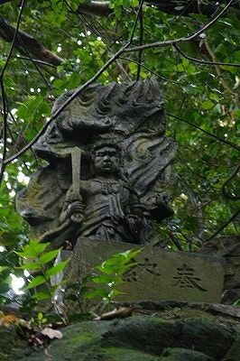 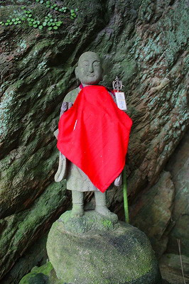
ちなみに先ほど入ってきた鳥居のある道路の向かいは海岸である。
したがって海面とこの場所の高低差はほとんどないはず。
海抜(ほとんど）ゼロメートルの滝という訳である。
で、ここからが本題です。
滝の右側、最初の鳥居を潜って石段を下りてすぐの地点にトタン屋根で覆われた岩陰がある。
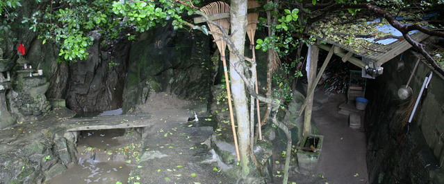
谷間で木に覆われ視界が悪く苔むして湿気ムンムンのこの場所の中でも明らかに特別な場所であることを示している。
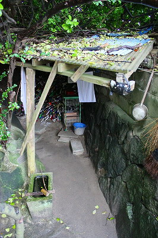
ここは
七郎権現と呼ばれ、いまから1200年ほど前にあった戦の際に馬の手綱とりの右馬七郎なる人がこの谷間に転げ落ちてしまった。
そして身を隠しているときに思わず咳をしてしまい、追っ手に見つかってしまう。
進退極まった七郎は短剣で自らの腹を切り自害して果てたという。
里の人達がその七郎を祀ったのがこの七郎権現というわけ。
で、今では咳の神様として↓こんなことになっているのだ。
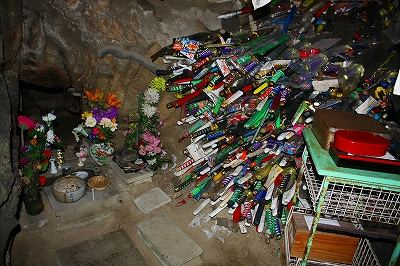
何百という刀である。
刀といっても勿論真剣ではなく、ましてや木刀ですらない。
塩ビのオモチャの刀である。ほら、子供のころチャンバラで使ったヤツ（若い方は知らないかなー）、マジ斬りするとペコって簡単に折れちゃうアレですよ。
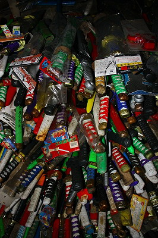
オモチャの刀だけに必要以上にカラフルでサイケデリックな信仰風景を作り上げている。
もっちろん基本私好みなのだが、チョット怖かったりもするわけでして…
きっとこの奥には↓があるに違いない。

「父ちゃぁ〜ん、こいは何本刺しても終わらんバイ」
「やかましか！黙って刺さんか、わいの番ぞ。シゲミ！あと100本買ってこんか！」
「あんた、もうコレで1万本目ですけん！いい加減親方に頭下げて仕事に行ってくんしゃい！」
「なにぃ！ワシの言うことが聞けんとか！…バシィッ！」
「痛！なんばしよっとですか！」「母ちゃんを殴るな！」「何ぃこんガキがぁ！」
「アンタ、こん子にだけは、こん子にだけはっ！」
…スミマセン、小芝居はもうこの辺でいいですか?九州弁良くわかんないし…
…こうして勝負事好きの父ちゃんはギャンブルじゃなくても家計を傾けていく、というハナシです…
いや違った。今でも刀を奉納する人がたくさんいるということが言いたかったんです！
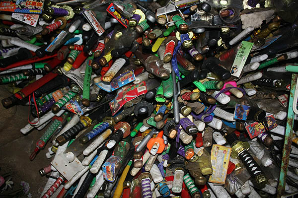
この七郎権現伝説の詳細を知らないので何ともいえないが、亡くなった七郎の慰霊のために作られた場所が咳を治す神様に変換されていくプロセスが不思議で仕方がない。
だって、七郎さんは咳をして失敗した人なわけで、咳の神様としては適してない人物なのではなかろうか。
どっちかというと
七郎さん自身が咳の神様に行け、っつー話なのでは？
さらに刀を奉納する理屈もよくわからない。
当時、戦といえば死因はほぼ刀（か槍か矢）によるものなので、取り立てて刀をクローズアップする理由はないはずだ。
例えば愛知県の野間大坊には大量の木刀が奉納されている。これは源頼朝と義経の父、源義朝が追っ手に殺された際「せめて木刀一本でもあれば殺されず済むものを」というコメントから義朝の死を悼む人達が木刀を奉納している…コレだったら判るでしょ？
ここ七郎権現の場合は自害だし、咳と直接関係ないし、たとえばフグに当たって亡くなった人にフグを奉納しているようなもんじゃないですか？
しかもそんな人に対して毒当たり除け祈願をしているような何か割り切れない思い、さらに言えば「コレって追い討ちかけてねえか?」的な気分になってしまうのだ。
まあ、その辺の
理屈のムチャ振り展開こそが民間信仰の面白いところなんですけどね。
改めて薄暗い岩陰に浮かび上がる大量のオモチャの刀を見る。
咳を治したい人にとってはそんな
理屈の整合性なんてどうでもいいんだよなあ。